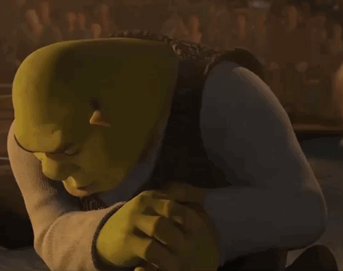

Hello gamers!
To commemorate the opening of this website, I have carefully curated a selection of highly recommended peak fiction. Check it out!
Also, here are some quick links:
The Star Wars Prequels (1999 - 2005)
Do I even need to explain? The prequels were absolute masterclasses in cinema, easily eclipsing the original trilogy.
From introducing the fan-favourite character Jar Jar Binks (TPM),
Yoda busting out his lightsaber for the first time on screen (AOTC),
and showcasing the tragic downfall of Anakin Skywalker and the Jedi Order (ROTS) -
an intricately crafted story from start to end with totally no faults.
Closing with a shot of the Tatooine twin suns (ROTS),
the prequel trilogy beautifully and consistently ties in with the original trilogy - what more could fans have asked for?
"It's like poetry, they rhyme." - George Lucas, 1999
The Shrek Movie Franchise (2001 - )

Pretty self explanatory. Where to even begin? Honestly, Shrek terrified me as a child.
But as one grows older one learns that Shrek is love, and Shrek is indeed life.
Shrek is timeless - in fact, there have been
rumours
of a fifth movie...